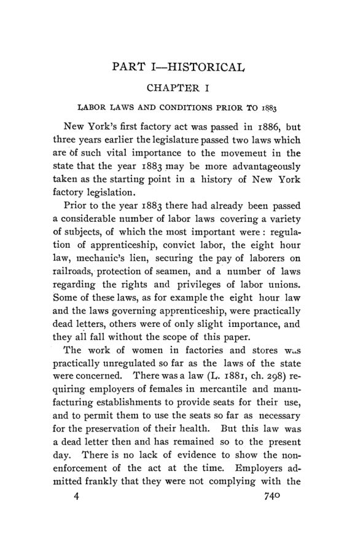

Fairchild, 1905: vinte anos de lei fabril em Nova York
Leitura: 7 min
Em 1905, Fred Rogers Fairchild reconstituiu a história da lei fabril de Nova York, de 1886 a 1903, e mediu com dados do Census e da inspeção o que ela fez com o trabalho infantil.


Em 1884, o comissário de estatísticas do trabalho de Nova York parou uma dúzia de crianças na saída de uma fábrica de Cohoes e perguntou suas idades. A mais velha tinha 13 anos. As outras tinham 10, 11 e 12. A maioria trabalhava havia mais de um ano; uma, de 11 anos, trabalhava havia cinco. Fred Rogers Fairchild usa esse levantamento para descrever o ponto de partida da lei que estuda.
The Factory Legislation of the State of New York saiu em 1905 como o nº 4 do vol. 6 da terceira série das Publications of the American Economic Association. O autor delimita o objeto: os artigos V e VI da lei do trabalho (capítulo 415 das leis de 1897), partes da lei de educação compulsória e a lei de responsabilidade do empregador, com a legislação em vigor até 1º de outubro de 1903. Deixa de fora o trabalho em cortiços e as padarias. A primeira parte é histórica; a segunda trata da administração e dos resultados.
Como era antes da lei?
Quase sem regra. Uma lei de 1881 exigia assentos para mulheres em lojas e fábricas, mas não previa pena nem inspeção, e nunca foi cumprida. Testemunhar contra o patrão significava demissão; num caso em Nova York, cerca de cinquenta vendedoras compareceram para depor a favor da defesa. Crianças de 8 a 15 anos trabalhavam em geral onze horas por dia nas cidades fabris do interior. Nas fábricas de charutos, segundo os depoimentos, elas eram de 5% a 25% dos trabalhadores.
Por que a lei dos charutos caiu?
A primeira tentativa foi proibir a fabricação de charutos em cortiços, aprovada em 1883 por pressão do sindicato dos charuteiros. No sistema, o fabricante alugava os apartamentos às famílias que trabalhavam para ele, e lucrava duas vezes. Fairchild registra dois motivos: a saúde e as condições de trabalho, e o desejo dos líderes sindicais de controlar o ofício, o que um dirigente lhe admitiu. Em 20 de janeiro de 1885, a Court of Appeals declarou a lei inconstitucional, por interferir na liberdade pessoal e na propriedade sem relação real com a saúde pública. Segundo o autor, em vinte anos ninguém mais tentou proibir diretamente o trabalho em cortiços.
Quem fez a lei de 1886?
Duas forças. De um lado, os sindicatos, reunidos na Workingmen's Assembly, com poder de voto em Albany. De outro, entidades filantrópicas, como a Society for the Prevention of Cruelty to Children, que redigiam os projetos. Os fabricantes se opuseram ano após ano, com o argumento de que a indústria seria arruinada ou deixaria o estado. A lei passou em maio de 1886, como capítulo 409. Proibia o trabalho fabril de menores de 13 anos e limitava a 60 horas semanais o de menores de 18 e de mulheres com menos de 21. Previa multa de 50 a 100 dólares e um inspetor com um assistente, com despesas de até US$ 2.500 por ano.
A lei foi sendo ampliada. Em 1889, a idade mínima subiu para 14 anos. Em 1899, o limite de horas passou a valer para todas as mulheres. O corpo de inspetores foi de um titular e um assistente para oito adjuntos no ano seguinte e cinquenta na época do estudo, dez dos quais podiam ser mulheres. O salário de um adjunto era de 1.200 dólares por ano. Em 1901, a inspeção foi fundida com o escritório de estatísticas num departamento do trabalho, decisão que o autor considera prejudicial à fiscalização.
A lei reduziu o trabalho infantil?
Pelos números do Census, sim. As crianças eram 5,9% dos empregados na indústria do estado em 1870 e 5,6% em 1880. Em 1890, eram 1,6%, e assim ficaram em 1900. Entre 1880 e 1890, o número absoluto caiu 58,5%. Fairchild adverte que parte da queda pode ser aparente, por mudanças de método e declarações falsas de idade, mas conclui que a lei teve papel importante. Também registra que a indústria do estado continuou crescendo, ao contrário do que os opositores previam.
O ponto fraco era a prova de idade. Até 1903, bastava a declaração juramentada dos pais, e o autor descreve uma corrente constante de crianças de 11, 12 e 13 anos entrando nas fábricas com declarações falsas. A legislação de 1903 exigiu prova documental e limitou a nove horas diárias o trabalho de menores de 16. No primeiro trimestre de 1904, 1.361 pedidos de certificado foram recusados, 560 por prova insuficiente da data de nascimento. No caso da Chelsea Jute Mills, o juiz Roesch afastou a defesa da declaração falsa:
“O empregador age por sua conta e risco.” (“The employer acts at his peril.”)
E a segurança de quem já era adulto?
Aqui os tribunais limitaram a lei. A lei fabril obrigava a proteger engrenagens e máquinas. Em Knisley vs. Pratt, uma operária teve o braço amputado depois de prendê-lo em engrenagens sem proteção, em violação clara da lei. A Court of Appeals manteve a rejeição da ação: ao aceitar o emprego conhecendo o risco, a empregada podia renunciar à proteção legal. O tribunal não viu razão para que o empregado não pudesse:
“assumir o risco evidente do negócio, tanto sob a lei fabril quanto fora dela” (“to assume the obvious risk of the business as well under the factory act as otherwise”)
Nas saídas de incêndio, o efeito é mais claro. Em 1885, de 816 respostas a um questionário oficial, 350 informavam ter saída de incêndio externa e 318, não. A lei de 1887 era mal redigida e produziu escadas pouco úteis; foi corrigida em 1889. Em 1892, estimava-se que quatro mil saídas haviam sido construídas por ordem dos inspetores. Sobre as regras sanitárias, o autor é cauteloso: a maioria das boas fábricas teria sido bem construída mesmo sem a lei.
Na minha leitura
Na minha leitura, o melhor do estudo é a combinação de fontes independentes: Census, relatórios da inspeção, processos judiciais e entrevistas. O autor declara de saída que não tentará medir efeitos sobre salários, porque as causas são muitas, e restringe a pergunta ao que a lei pretendia fazer. É uma escolha honesta. O limite está na queda de 1880 a 1890: o Census mostra o resultado, mas não separa a lei de outras mudanças, como a escola e a técnica, e o próprio autor admite isso.
O caso mostra que uma regra vale o que vale a sua prova. A idade mínima de 1886 dependia da palavra dos pais; só a exigência de documentos, em 1903, deu dentes à proibição. E o caso Knisley mostra o outro lado: uma obrigação legal pode ser esvaziada se o tribunal permitir que a parte mais fraca renuncie a ela ao aceitar o emprego. Regra, fiscalização e interpretação judicial formam um único sistema.
Glossário
- Lei fabril (factory law)
- conjunto de normas que regulam o trabalho em estabelecimentos manufatureiros: idade, jornada, segurança e higiene.
- Poder de polícia (police power)
- competência do estado para restringir liberdades em nome da saúde, segurança e moral públicas.
- Declaração juramentada (affidavit)
- afirmação escrita sob juramento; até 1903, era a prova de idade da criança.
- Risco assumido (assumed risk)
- doutrina do direito comum segundo a qual quem aceita um emprego conhecendo o perigo aceita também o risco.
- Court of Appeals
- o tribunal mais alto do estado de Nova York.
- Cortiço (tenement-house)
- prédio de apartamentos populares, onde famílias também trabalhavam por encomenda.
Fontes
- [The Factory Legislation of the State of New York]: Introduction (pp. 1–3). JSTOR · Internet Archive (PDF)
- The Factory Legislation of the State of New York (pp. 4–218). JSTOR · Internet Archive (PDF)
- Sumário da edição no JSTOR: Publications of the American Economic Association, 3ª série, vol. 6, nº 4.
Documento em domínio público (EUA, publicado antes de 1931), via JSTOR Early Journal Content e Internet Archive. Resumo e comentário do autor deste site, sem afiliação com a American Economic Association. Encontrou um erro? Escreva: a correção é publicada no próprio texto, com data.
← Nº 75 · Meeker, 1905: o que os subsídios à navegação compraram Nº 77 · Baltimore, 1905: o amor à riqueza e o serviço público →